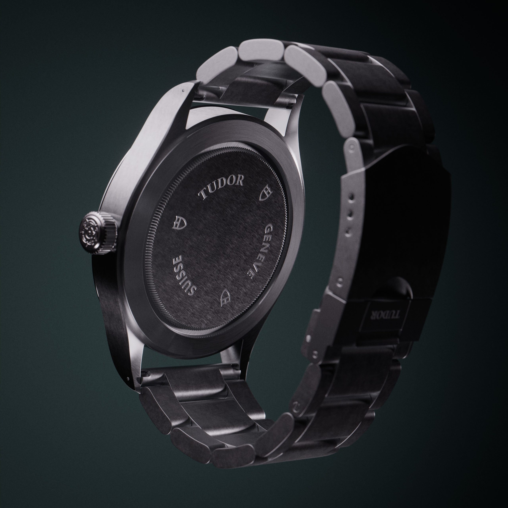
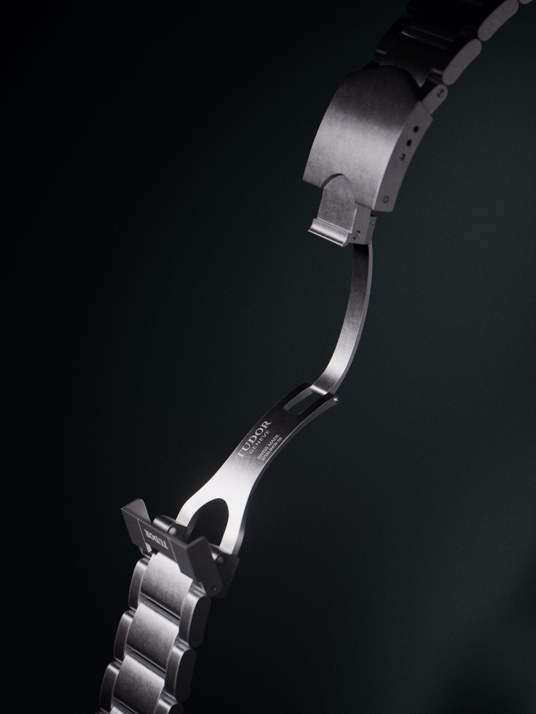
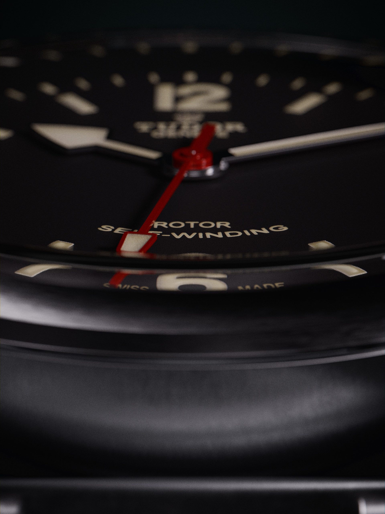
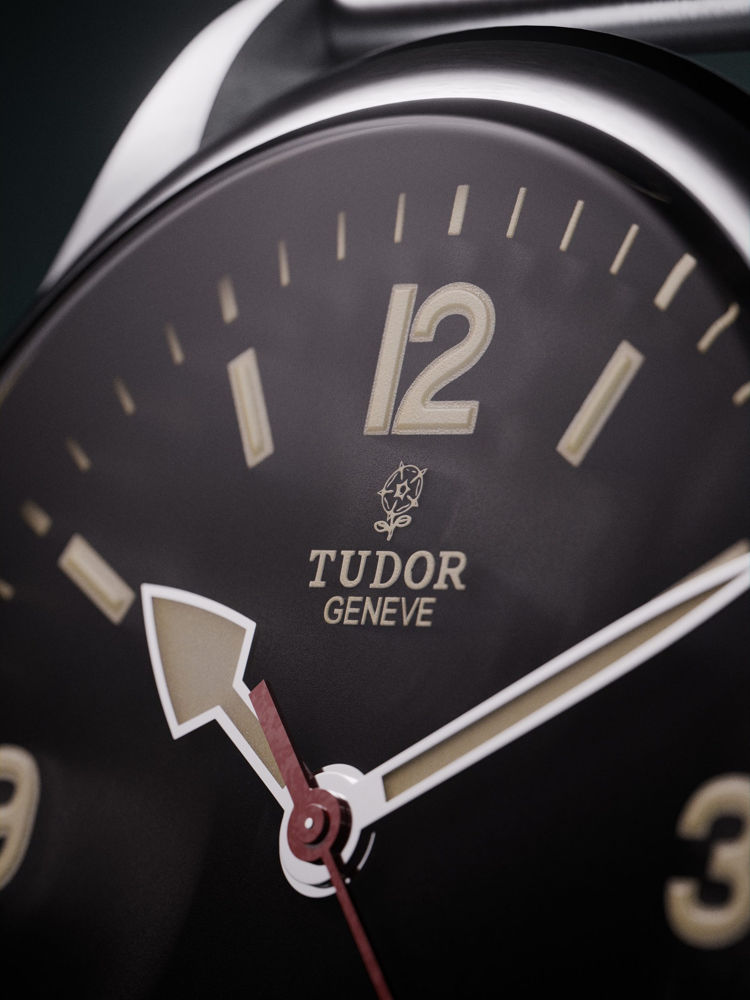
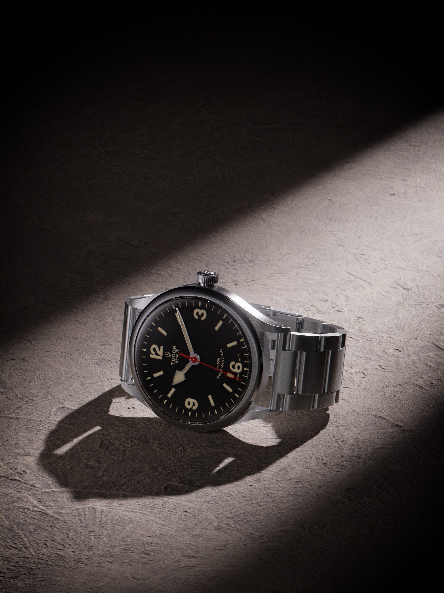
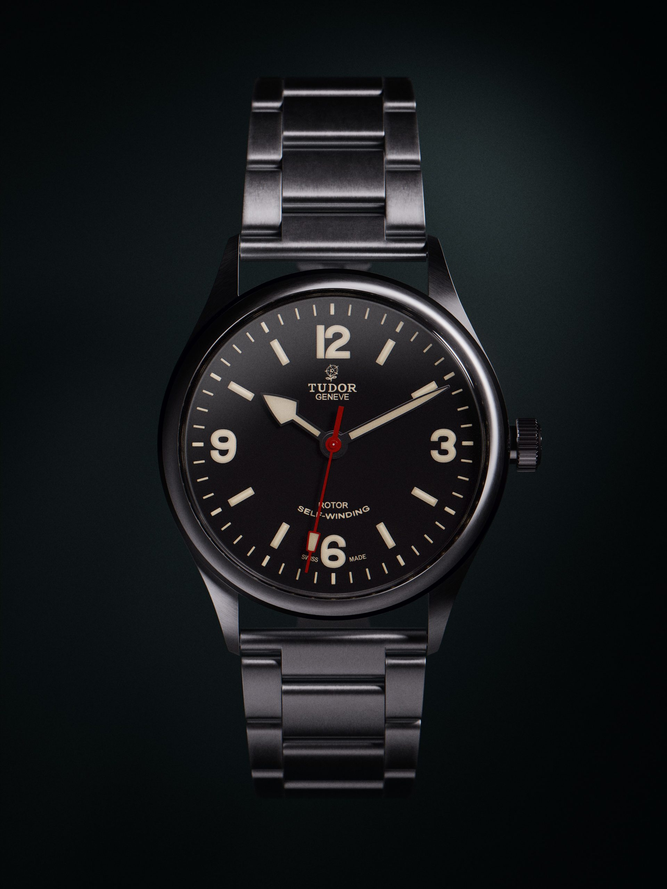
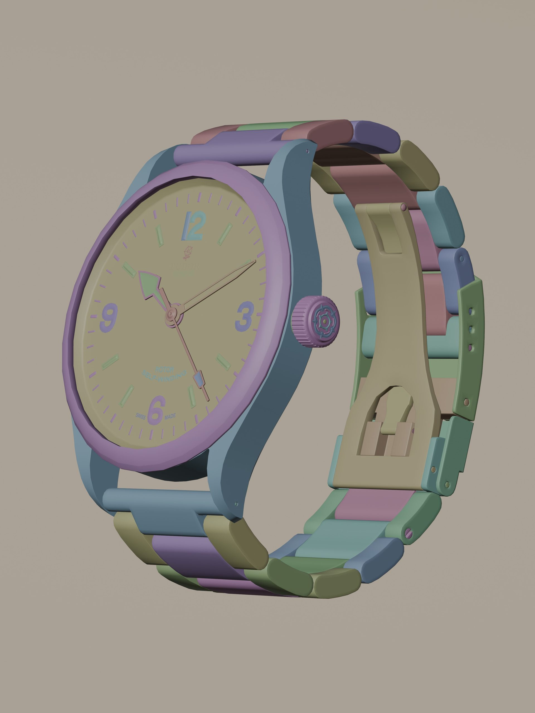
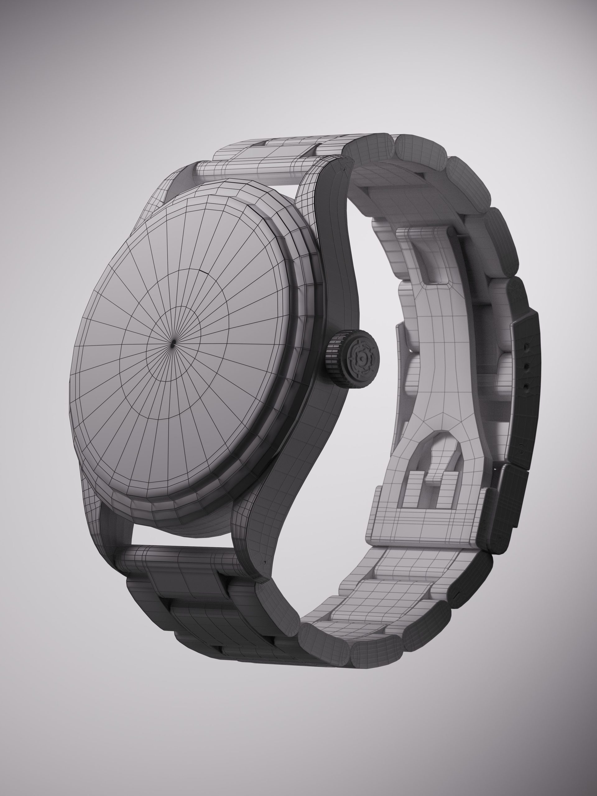
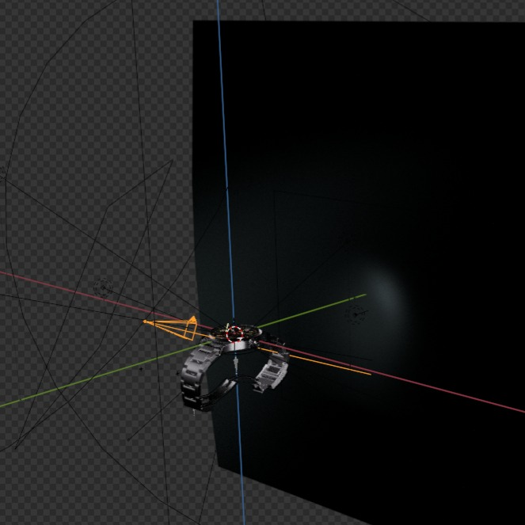

← Projets · Projet personnel · Horlogerie · 2025
Tudor — Heritage Ranger

Après des années à travailler pour l'horlogerie de luxe à Genève sous accords de confidentialité, j'ai remodélisé la Heritage Ranger de Tudor pour montrer ce savoir-faire : fidélité maximale au modèle, finitions mises en valeur, et un rig pensé pour une courte animation de présentation.









Making-of
Tout modélisé à la main
Sans accès aux plans CAO, chaque élément a été modélisé, déplié et texturé manuellement. Les textures ont été peintes dans Substance Painter et finalisées directement dans Blender.
Le projet a aussi été l'occasion de développer un rig dédié, assez robuste pour animer une courte présentation de la montre.


